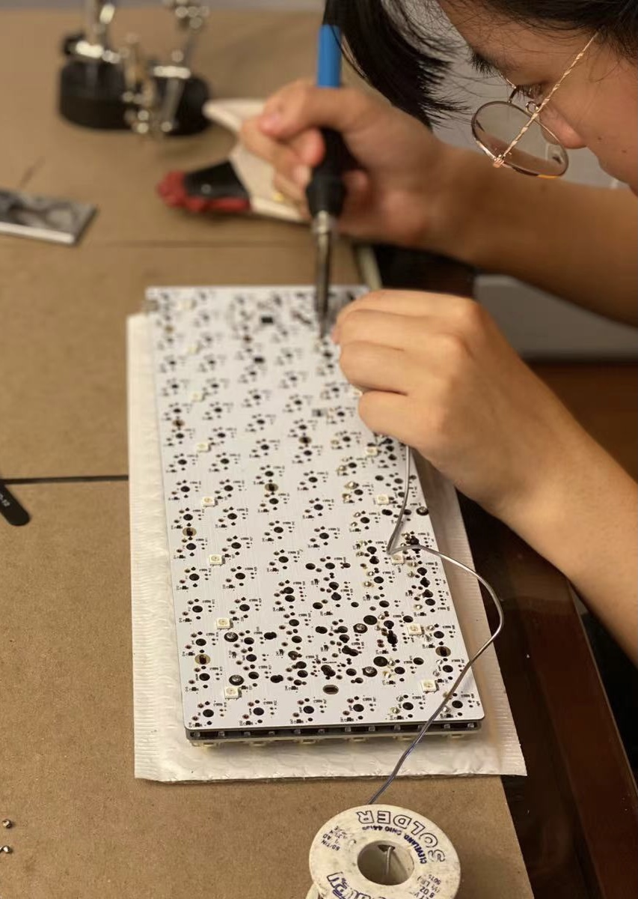

My name is Casey Ye, a current student with a strong passion for keyboards and PC building! I started this hobby during 2019, when
COVID started and everyone was in lockdown. I had broken my laptop and built my very first desktop computer. It was a good investment,
especially considering the amount of time I would be spending in front of the computer. Not only did this experience introduce me to
custom keyboard building, but it allowed me to better communicate with other people and find like-minded people.
My name is Casey Ye, a current student with a strong passion for keyboards and PC building! I started this hobby during 2019, when
COVID started and everyone was in lockdown. I had broken my laptop and built my very first desktop computer. It was a good investment,
especially considering the amount of time I would be spending in front of the computer. Not only did this experience introduce me to
custom keyboard building, but it allowed me to better communicate with other people and find like-minded people.
 After taking many computer programming courses in high school, I realized my initial career plan of becoming a software engineer (inspired by a family member) wasn't cut out for me. I lacked the confidence in my code and felt like I depended on too many people to produce code that I would be proud to call my own. Building keyboards and computers and working with the actual hardware components gave me the confidence I was looking for when exploring career paths. This hobby is what lead me to believe that I would be a good electrical engineer.
I've always had a passion for helping and educating other people. I hope that with this website, I can share my keyboard and PC building
journey to a wider audience and inspire other people, the same way this hobby inspired and help me find what I want to do with my future!